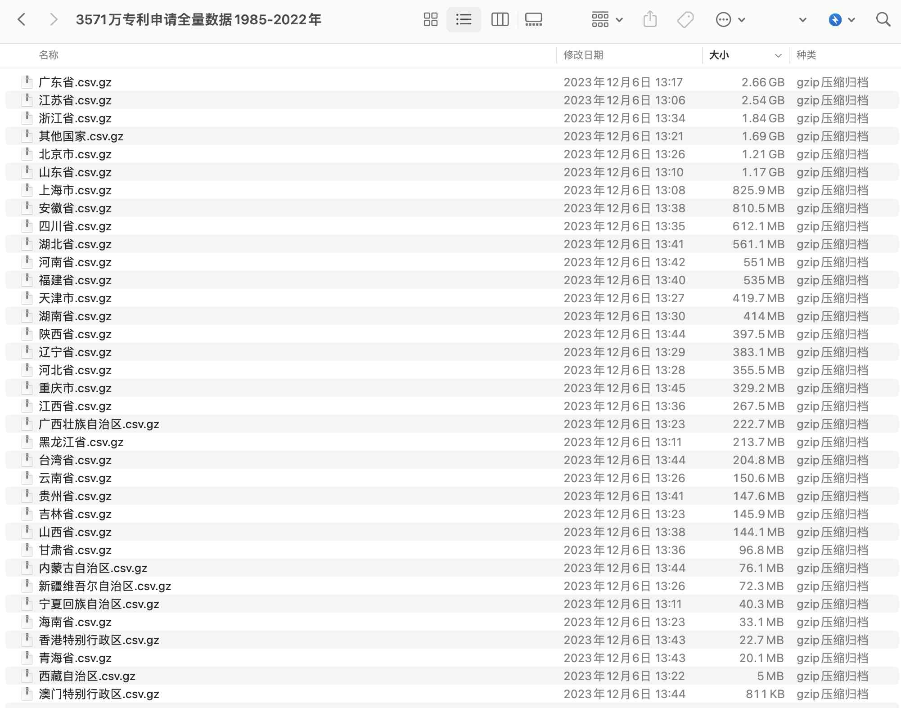
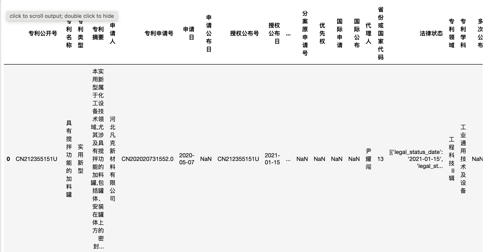
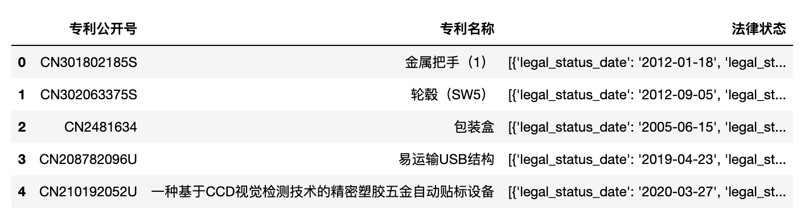

一、问题
最近分享的数据集都是体量巨大，
- 93G数据集(付费) | 中国裁判文书网(2010-2021)
- 数据集(付费) | 2.49亿条中国大陆工商企业注册信息(更新至23.9)
- 数据集(付费) | 3.9G全国POI地点兴趣点数据集
- 数据集(付费) | 3571万条专利申请数据集(1985-2022年)
下图是 数据集 | 3571万条专利申请数据集(1985-2022年)截图，其中 广东省.csv.gz 2.66 G，解压后得到的 广东省.csv 接近10G， 已经超过很多学员电脑内存（现在常见的笔记本内存是8G和16G），我们应该如何应对这类 巨大csv文件 呢？

二、思路
一般应对 广东省.csv.gz 这种巨大csv文件，可以从以下两大类思路:
思路1. 使用更高配置的电脑
思路2. 花点功夫学大文件处理技巧
2.1 使用更高配置的电脑(服务器)
思路1， 方法简单，思路简单， 写代码的方式一如既往， 认知成本低， 美中不足要花钱。
- 买电脑； 如果你不差钱，直接换更好的电脑， 8G–>16G–>32G–>64–>96G–>128G… 预算决定数据处理能力的上限。
- 租用服务器；如果差钱，资金不足脑力凑。 租用服务器的难点是像你我刚接触电脑一样，要熟悉服务器操作，前期存在较大的认知难度和学习难度。
2.2 花点功夫学大文件处理技巧
网上关于处理大文件的技巧虽然很多，比如针对每个字段的数据类型，整形、浮点型、64位、32位， 反正大邓是不太懂。 咱们学python的原则是，用最少的时间学到最常用最有用的，解决80%的问题，剩下的20%太难的问题还是交给专业人士。假设你我电脑内存是8G，要在此环境下进行数据处理， 以下是常见的处理方法
-
读取前n条记录
-
读取某个(些)字段
-
小批次读取
-
转csv为xlsx
在接下来的章节中，我们重点分享以上5类技巧代码。
三、代码技巧
以csv、xlsx这类数据， 每行代表一条记录，每列代表一个字段，而文件体积是由行数和列数决定。而 pd.read_csv有三个最常用的参数nrows、usecols、chunksize，分别决定读前nrows行、选择usecols列读取、按照chunksize分批次读取。
以 广东省.csv 有 10.42G， 而电脑内存只有8G， 对这个csv文件，除了知道文件名，其他信息一无所知。这时候最简单的技巧就是尝试着读取前n条记录，先了解字段有哪些。
3.1 读取前n条记录
3.1.1 参数nrows
读取前n条记录， 了解csv字段有哪些
import pandas as pd
#只读取csv中前100条记录
df = pd.read_csv('广东省.csv.gz', nrows=5, compression='gzip')
#使用bandizp、winrar等常用的解压软件解压gz文件，得到csv文件
#df = pd.read_csv('广东省.csv', nrows=5)
df.head()

字段太多， 很多字段隐藏起来。详细了解csv的字段信息，还需要
- df.columns 获得所有的字段名
- df.info(memory_usage=‘deep’) 所有字段及字段数据类型
- df.memory_usage(deep=True) 每个字段占用的系统内存
3.1.2 df.columns
获得所有的字段名
df.columns
Run
Index(['专利公开号', '专利名称', '专利类型', '专利摘要', '申请人', '专利申请号', '申请日', '申请公布日',
'授权公布号', '授权公布日', '申请地址', '主权项', '发明人', '分类号', '主分类号', '代理机构', '分案原申请号',
'优先权', '国际申请', '国际公布', '代理人', '省份或国家代码', '法律状态', '专利领域', '专利学科',
'多次公布'],
dtype='object')
3.1.3 df.info(memory_usage=‘deep’)
单单用df.columns只知其名，但无法内部什么数据结构。使用df.info()
df.info(memory_usage='deep')
Run
<class 'pandas.core.frame.DataFrame'>
RangeIndex: 5 entries, 0 to 4
Data columns (total 26 columns):
# Column Non-Null Count Dtype
--- ------ -------------- -----
0 专利公开号 5 non-null object
1 专利名称 5 non-null object
2 专利类型 5 non-null object
3 专利摘要 5 non-null object
4 申请人 5 non-null object
5 专利申请号 5 non-null object
6 申请日 5 non-null object
7 申请公布日 0 non-null float64
8 授权公布号 5 non-null object
9 授权公布日 5 non-null object
10 申请地址 5 non-null object
11 主权项 3 non-null object
12 发明人 5 non-null object
13 分类号 5 non-null object
14 主分类号 5 non-null object
15 代理机构 4 non-null object
16 分案原申请号 0 non-null float64
17 优先权 0 non-null float64
18 国际申请 0 non-null float64
19 国际公布 0 non-null float64
20 代理人 4 non-null object
21 省份或国家代码 5 non-null int64
22 法律状态 5 non-null object
23 专利领域 5 non-null object
24 专利学科 5 non-null object
25 多次公布 0 non-null float64
dtypes: float64(6), int64(1), object(19)
memory usage: 14.7 KB
Dtype中，object是字符串(文本)型数据； float64是数字型数据。5条记录占用系统内存14.7kb
3.1.4 df.memory_usage(deep=True)
但最好能了解每个字段占用的系统内存， 后续可以决定只读取必要的字段，减少内存占用。
df.memory_usage(deep=True)
Run
Index 132
专利公开号 342
专利名称 512
专利类型 450
专利摘要 2434
申请人 528
专利申请号 361
申请日 335
申请公布日 40
授权公布号 342
授权公布日 335
申请地址 668
主权项 2322
发明人 450
分类号 366
主分类号 320
代理机构 496
分案原申请号 40
优先权 40
国际申请 40
国际公布 40
代理人 390
省份或国家代码 40
法律状态 3084
专利领域 470
专利学科 474
多次公布 40
dtype: int64
对字段进行排序， 按照占用内存从大到小排列
df.memory_usage(deep=True).sort_values(ascending=False)
Run
法律状态 3084
专利摘要 2434
主权项 2322
申请地址 668
申请人 528
专利名称 512
代理机构 496
专利学科 474
专利领域 470
发明人 450
专利类型 450
代理人 390
分类号 366
专利申请号 361
专利公开号 342
授权公布号 342
授权公布日 335
申请日 335
主分类号 320
Index 132
国际公布 40
国际申请 40
省份或国家代码 40
优先权 40
分案原申请号 40
申请公布日 40
多次公布 40
dtype: int64
5条记录总内存（单位：字节)
df.memory_usage(deep=True).sum()
Run
15091
3.2 读取某字段
使用usecols参数，设置只读取某个(些)字段
#读取前5行，且只读入 '专利公开号', '专利名称', '法律状态' 这3个字段
df2 = pd.read_csv('广东省.csv', nrows=5, usecols=['专利公开号', '专利名称', '法律状态'])
df2

同样是5条记录， 读入全字段和读入选定字段，占用系统内存分别是
print('全字段: ', df.memory_usage(deep=True).sum())
print('选定字段: ', df2.memory_usage(deep=True).sum())
de_x = df.memory_usage(deep=True).sum()/df2.memory_usage(deep=True).sum()
print(f'压缩倍数: {round(de_x, 2)}')
Run
全字段: 15091
选定字段: 4070
压缩倍数: 3.71
所以电脑内存仅为8G， 是能够处理几倍于内存的巨大csv文件， 具体取决度数据中字段占用内存的情况。
3.3 小批次读取
当探索完前n行，选中某些列，我们已经了解了哪些字段是我们必须要用的， 占用系统内存的大小。接下来，我们就可以尝试着按照批次读取数据。后面一节，我们尝试转csv为xlsx，其实就是按批次读取， 将数据转为体量更小的xlsx。
为了让实验简单高效，我们假设只读取前50行， 每批次是5行。 对比下占用系统内存的量
import pandas as pd
#一次性读取
df100 = pd.read_csv('广东省.csv', nrows=50)
print(df100.memory_usage(deep=True).sum(), end='\n\n')
#分批次读取
#每5条记录是一个批次，得到chunk_dfs
chunk_dfs = pd.read_csv('广东省.csv', chunksize=5, nrows=50)
#每个chunk_df就是我们熟悉的dataframe类型数据
for chunk_df in chunk_dfs:
print(chunk_df.memory_usage(deep=True).sum())
Run
一次性读取
147200
分批次读取
15091
15709
15475
15383
13999
14173
14151
14343
13313
16751
在实践中，nrows 和 chunksize不会同时出现， 而且chunksize一般都会设置的很大，例如1000条或者10000条。
chunk_dfs = pd.read_csv('csv文件', chunksize=1000, nrows=50)
看到chunk_dfs也不要害怕，其实每个chunk_df就是我们熟悉的df，即dataframe数据类型。
四、总结
记住这行代码
pd.read_csv(csvf, nrows, usecols, chunksize)
8G内存的电脑， 通过以上技巧，基本可以把我们应对大数据的潜力放大N倍。 N可以是几倍、十几倍、几十倍、上百倍…，放大潜力的过程起主要作用的是usecols和chunksize这两个参数。